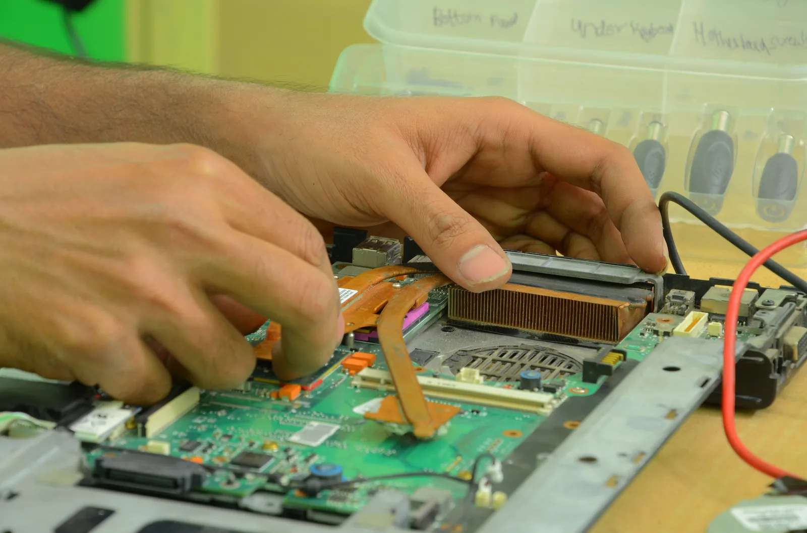
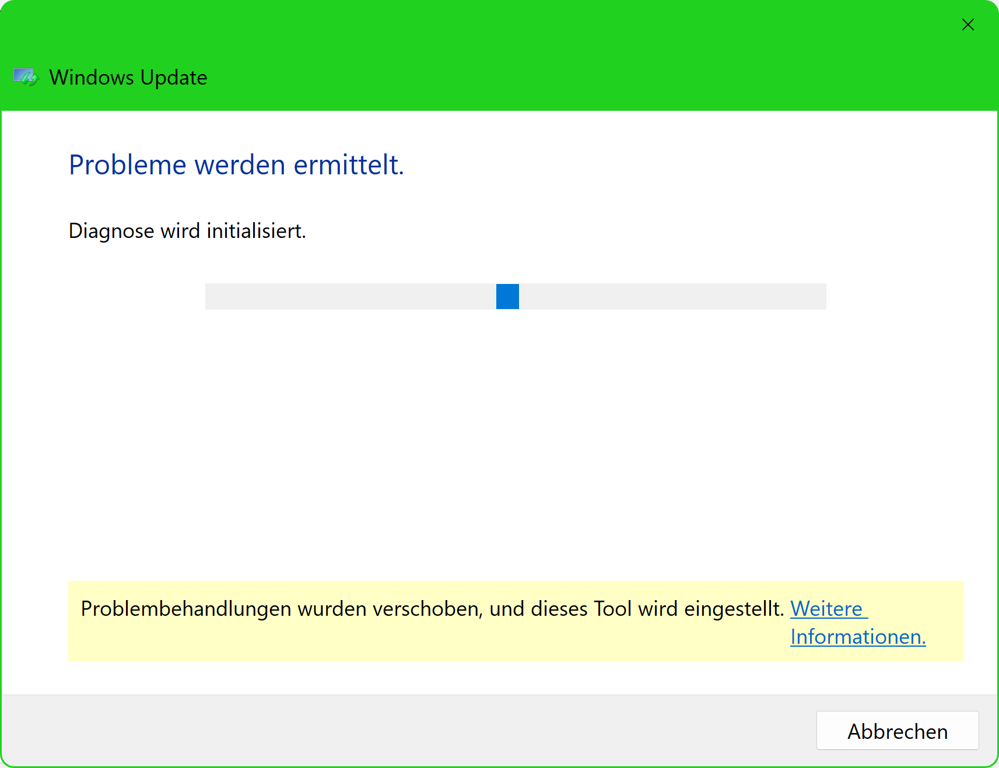
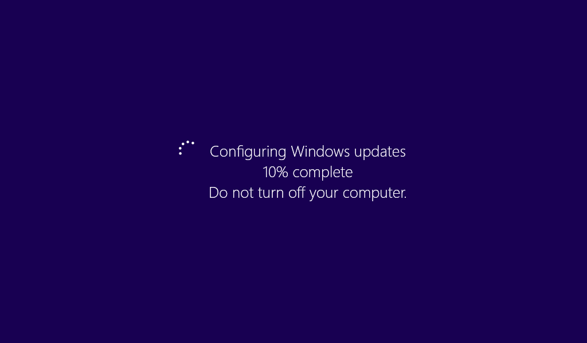

Set Awal Running Test
- Brightness 30% untuk layar 250 nits.
- Jika panel 300-400 nits: turunkan brightness ke 20%.
- Audio 30%.
- Battery wajib 100% sebelum test dimulai.
Panduan QC & Maintenance Laptop
Sebelum belajar dan praktik, ucapkan Bismillah agar ilmu yang dipelajari menjadi berkah dan bermanfaat. Niat menjadi fondasi setiap amal (HR. Bukhari no. 1, Muslim no. 1907), dan Allah meninggikan derajat orang berilmu (QS. Al-Mujadilah 58:11).

Patokan utama dimulai dari angka jam awal, bukan menunggu menit/detik pas. Setelah test selesai, lakukan normalisasi sesuai tabel SOP di bawah.
Jika hasil mentah hanya 2 jam atau kurang, lanjutkan langsung ke tahap Maintenance & Problem Solving (Langkah 1-4).
Setiap ada update resmi OEM, lakukan full update terstruktur: BIOS/firmware, chipset, power management, lalu validasi ulang running test.
1. SOP Running Test Jam Video
| Hasil Mentah Running Test | Aturan Koreksi | Hasil QC Final |
|---|---|---|
| 2 jam | Lanjut Maintenance | Belum lolos, proses langkah 1-4 |
| 3 jam 30 menit | Kurangi 30 menit | 3 jam 00 menit |
| 3 jam 10 menit | Kurangi 30 menit | 2 jam 40 menit |
| 4 jam 45 menit | Kurangi 45 menit | 4 jam 00 menit |
| 5 jam 20 menit | Kurangi 1 jam | 4 jam 20 menit |
| 6 jam 13 menit | Kurangi 1 jam | 5 jam 13 menit |
| 7 jam 32 menit | Kurangi 2 jam | 5 jam 32 menit |
| 8 jam 53 menit | Kurangi 2 jam | 6 jam 53 menit |
Masukkan durasi untuk melihat hasil QC final.
2. Battery
Jika tiga kondisi ini terjadi bersamaan, battery dianggap sudah aus dan tidak optimal untuk pemakaian jangka panjang.
Unit boleh lanjut dengan catatan khusus QC dan edukasi ke user bahwa performa battery sudah menurun.

Maintenance & Problem Solving
Lakukan update BIOS/firmware, chipset, power management, dan aplikasi update resmi OEM. Tujuan: memastikan kontrol daya dan komunikasi sensor battery berjalan stabil.

Catatan: lakukan restart setelah update besar BIOS/firmware.
Jika hasil membaik, unit bisa lanjut QC. Jika tetap sama/lebih jelek, lanjut langkah 3.

Jika unit pakai Windows 11, pastikan perangkat benar-benar kompatibel dan driver tersedia penuh. Gunakan cek kompatibilitas resmi Microsoft dan OEM:
Jika unit mentok di Windows 10, jangan dipaksakan ke Windows 11. Driver lintas versi sering menyebabkan bug, performa battery tidak optimal, dan troubleshooting jadi lebih sulit.
Prioritaskan paket driver/firmware yang statusnya Recommended dan resmi dari vendor perangkat.
Setelah install ulang versi lebih rendah, lakukan full update resmi lalu Running Test ulang.
Jika hasil tetap 2 jam atau kurang: battery wajib diganti karena kondisi usia pakai sudah tidak layak untuk pemakaian jangka panjang.

Link Resmi Driver OEM
Utama: Lenovo Vantage, Lenovo System Update (desktop/notebook/workstation).
Lenovo Support Lenovo System Update Lenovo VantageConsumer: SupportAssist. Commercial: Dell Command | Update.
Dell Drivers & Downloads Dell Command | Update SupportAssist for Home PCsConsumer: HP Support Assistant. Business: HP Image Assistant (HPIA).
HP Drivers HP Support Assistant HP Image Assistant (HPIA)Utama: MyASUS - System Update. ASUS Live Update sudah EOL dan hanya legacy.
ASUS Download Center MyASUS - System Update Status ASUS Live UpdateGunakan portal Dynabook Support untuk driver, BIOS, dan utilities resmi.
Dynabook Drivers & Software Dynabook Service StationTool otomatis resmi: DeskUpdate (driver, utility, BIOS).
Fujitsu DeskUpdate Fujitsu Support DownloadsCatatan versi OS: Microsoft menyatakan dukungan Windows 10 berakhir pada 14 Oktober 2025. Jika unit tidak kompatibel Windows 11, lakukan penilaian teknis dan kebijakan penggunaan internal sebelum finalisasi unit.
Integrasi Tools

Dokumen
File PDF sudah disiapkan dari materi ini, termasuk langkah SOP, tabel normalisasi, dan link driver resmi.
Buka / Unduh PDF